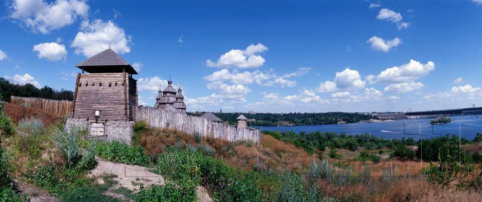

| Головна | Україна — моя Батьківщина | Моя Україна |
Моя країна-найкраща у світі
Просторі степи, мальовничі гори, прекрасний краєвид струмків із невеличкого пагорба – усім цим може похвалитись наша країна – Україна. Чимало прекрасного і мальовничого приховує наша матінка-країна у своїх лісах, степах . І чимало прекрасного для нас ще невідомо, адже ніхто не знає що може бути прихованим у великому лісі або ж , на дні Дніпра.
Протягом століть , наш народ боровся із ворогами за нашу ” мальовничу” землю, яка зачаровує будь-кого з першого погляду, і не залишає байдужим іноземців .Але чи весь народ цінує свою Батьківщину? Після останніх подій в Україні, ми бачимо те що не всі жителі України – прихильники усієї її краси. А саме на східній Україні залишилось безліч людей які не полишають своїх давніх, ще прорадянських традицій.
Так. Україна пережила багато. Але чи не зачаровують нас ті давні обряди наших предків, які змушували душу тремтіти, а тіло слухати звуки природи, чи не зачаровувала нас ніч Івана Купала, або ж Андріївська ніч, на мою думку безліч українців ще пам‘ятають ці на перший погляд прості, але зачаровуючи обряди, які змушували нас вірити у надприродне і чарівне.
Отже ми сміло можемо сказати те, що наша країна багата як матеріально так і духовно, адже лише на Україні можна знайти веселого гуцула або ж простого перехожого який з радістю розкаже тобі про все що може бути тобі важливим, і лише на Україні можна просто розслабитись як тілесно так і духовно.